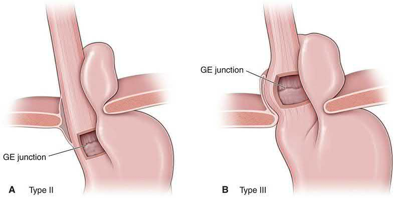
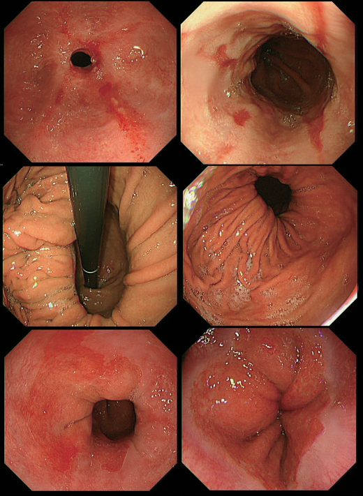
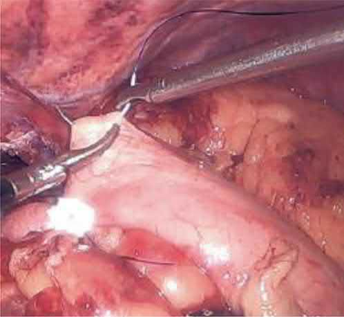
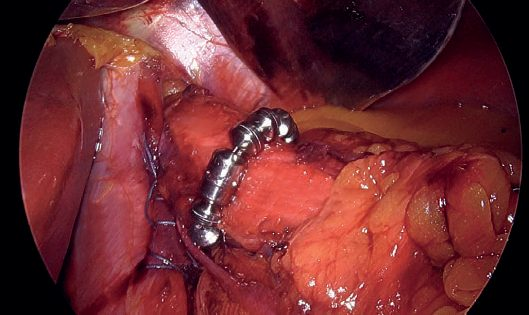

GERD and Hiatal Hernia
Summary
- Gastro-oesophageal reflux disease (GERD/GORD) is defined by the Montreal definition as a condition that develops when reflux of stomach contents causes troublesome symptoms and/or complications [1].
- It is the most common benign gastroesophageal disorder, closely linked to hiatal hernia, obesity, and esophageal adenocarcinoma, and most patients respond to medical therapy, though surgery has an established role in medically refractory disease [2].
- Hiatal hernias occur when the stomach herniates through the diaphragmatic hiatus into the mediastinum and are classified into four types, with type I (sliding) accounting for 70–95% of cases [1][2].
In the UK, this condition is managed along a defined NHS pathway: primary care screens for red-flag features and trials acid suppression, secondary care confirms pathological reflux objectively, and surgery is offered to a selected minority [3][4].
![The GORD care pathway in four stages. Primary care assessment and red-flag screening: review medication (NSAIDs, corticosteroids, bisphosphonates), assess severity with GerdQ, and refer urgently on the two-week-wait pathway for dysphagia, progressive weight loss, persistent vomiting, iron-deficiency anaemia, an epigastric mass, or age over 55 with unexplained persistent reflux. Medical management and the PPI trial: offer a full-dose PPI for 4 or 8 weeks, step down to the lowest dose that controls symptoms, and leave a 2-week washout before H. pylori testing. Specialist referral and secondary care work-up: the three-part investigation is (1) upper GI endoscopy, to assess oesophageal injury, diagnose Barrett's oesophagus, and biopsy to exclude malignancy or eosinophilic oesophagitis; (2) oesophageal manometry, to exclude an underlying motility disorder that would contraindicate surgery; and (3) 24-hour pH monitoring, to prove pathological acid reflux and correlate symptoms with reflux episodes. Criteria for laparoscopic fundoplication: confirmed acid reflux with adequate control on acid suppression but unwillingness to continue long term, or response to a PPI with intolerance of acid suppression](../assets/infographics/gerd-uk-pathway.webp)
Definition
- GERD is defined by the Montreal definition, reached by a 44-expert international consensus in 2006, chosen so that patients can be diagnosed independent of the technology used for evaluation, as reflux of gastric contents causing troublesome symptoms and/or complications [1][6].
- Within this definition, nonerosive reflux disease (NERD) is classic GERD symptoms without mucosal complications, and accounts for 30–70% of patients presenting for endoscopy with reflux symptoms [6].
- A hiatal hernia is the presence of part or all of the stomach within the thoracic cavity, usually through protrusion via the oesophageal hiatus in the diaphragm [7].
- GERD may arise if gastroesophageal junction (GEJ) pressure is lower than the transdiaphragmatic pressure gradient; GEJ pressure is not determined by any single structure but by a complex of anatomic features including the intrinsic LES muscle, gastric sling fibers, diaphragmatic crura, and the angle of His [2].

Pathophysiology
- The antireflux mechanism in humans is composed of three components: a mechanically effective lower esophageal sphincter (LES), efficient esophageal clearance, and an adequately functioning gastric reservoir; a defect in any one can lead to increased esophageal acid exposure and mucosal injury [8].
- GERD develops from an imbalance between the transdiaphragmatic pressure gradient (positive abdominal pressure vs. negative thoracic pressure) and the valve mechanism at the EGJ, which comprises the LES, the diaphragmatic crus, the angle of His, mucosal (Gubaroff) valves, and the intra-abdominal esophageal segment [2].
- Hiatal hernias are the most common cause of a defective EGJ valve because they eliminate intra-abdominal esophageal length, obtuse the angle of His, enlarge the hiatus, and cause the diaphragm to pinch the stomach rather than the esophagus; transient LES relaxations (TLESRs) are also more frequent with hiatal hernias [2].
- Hormonally, gastrin and motilin increase LES pressure, while cholecystokinin, estrogen, glucagon, progesterone, somatostatin, and secretin decrease it; drugs such as anticholinergics, calcium channel blockers, caffeine, and theophylline also decrease LES pressure [8].
- Hiatal hernias themselves result from laxity of the diaphragmatic crura and phrenoesophageal ligaments, worsened by high intra-abdominal pressure (obesity, weightlifting) and low intrathoracic pressure (chronic pulmonary disease); they are more common in females and with increasing age [2].
Clinical features
- Typical oesophageal symptoms include heartburn (retrosternal burning) and regurgitation, which are the most common complaints, with regurgitation indicating more severe disease [1][2].
- Symptoms are often provoked by large meals, fatty/spicy foods, recumbency, and bending or heavy lifting [1][9].
- Regurgitation of gastric acid with central chest pain is not seen in cardiac ischaemia and is typical of GERD, whereas breathlessness favours cardiac disease [10].
- Extraoesophageal manifestations include chronic cough, laryngitis, asthma, hoarseness, dental erosions, aspiration pneumonia, and are also associated with sinusitis, pulmonary fibrosis, pharyngitis, and recurrent otitis media [1][7].
- Dysphagia may result from a large hiatal hernia, peptic stricture, or oesophageal carcinoma; bleeding may present as haematemesis from erosive oesophagitis, Cameron ulcers (ischaemic ulcers at the diaphragmatic constriction within large hiatal hernias), or tumour [1].
Hiatal hernia presentations
Sliding hiatal hernias predispose to GERD and may be asymptomatic or found incidentally on chest imaging; true paraesophageal hernias more often cause obstructive symptoms (dysphagia, early satiety, pain, regurgitation, bloating) and may cause dyspnea, cardiac compression, anemia (30–40%, from chronic gastric compression/Cameron ulcers), and rarely acute gastric volvulus [2]. Acute gastric volvulus classically presents with "Borchardt triad": sudden chest/epigastric pain, dry heaving, and inability to pass a nasogastric tube [2].
Etiology
- Risk factors include obesity (increases intra-abdominal pressure and augments the transdiaphragmatic pressure gradient), pregnancy, athletic abdominal straining, hiatal hernia, connective tissue disease, and elevated intra-abdominal pressure from tight garments or chronic straining [1][2].
- An "acid pocket" (an area of unbuffered gastric acid accumulating in the proximal stomach after meals) together with a hiatal hernia can exacerbate GERD severity [1].
- Global GERD incidence is rising, attributed to increasing obesity and declining rates of Helicobacter pylori infection (postulated to reduce oesophageal acid exposure via corpus gastritis/atrophy) [1].
- Male gender, older age, and obesity are established risk factors for GERD and Barrett's oesophagus [7].
- Predisposing factors for hiatal hernia include obesity and previous surgery, and hiatal hernias are more common in females [2][7].
Diagnosis
Endoscopy and contrast studies
- Barium swallow evaluates hiatal hernias and obstructing lesions and can identify reflux events but cannot alone establish the diagnosis of GERD [2].
- Upper endoscopy is essential before antireflux surgery, establishing Barrett esophagus or reflux esophagitis and excluding malignancy; LA grade C/D esophagitis, peptic strictures, and Barrett esophagus are considered pathognomonic for GERD [2].
- The Los Angeles (LA) classification grades oesophagitis from A (mucosal breaks ≤5 mm not extending between mucosal folds) to D (mucosal breaks involving ≥75% of the circumference) [8].
- Hiatal hernia is typically identified on EGD, CT, or barium swallow; CT is the investigation of choice in acute presentations [2][7].
- Retroflexing the endoscope after passage through the GEJ allows the gastroesophageal flap valve to be graded by the Hill classification, from Grade I (a well-defined ridge of tissue closely wrapping the endoscope shaft) to Grade IV (no muscular ridge at all, the valve open at all times, with a hiatal hernia always present); an increasing Hill grade correlates with a more mechanically defective sphincter, abnormal acid exposure, erosive esophagitis, and Barrett's oesophagus [6].
UK assessment before any endoscopy referral includes a review of all current medication for possible causes of dyspepsia (for example NSAIDs, corticosteroids, bisphosphonates, nitrates, theophyllines), identification of psychological and social stressors, and physical examination to rule out an upper abdominal mass [3][4]. Cardiac and biliary disease should be considered as part of the differential [3].
Refer immediately (same day) any person with dyspepsia and significant acute gastrointestinal bleeding [3]. Refer urgently to a team specialising in upper GI cancer if any of the following are present [4]:
- Dysphagia, progressive unintentional weight loss, or persistent vomiting
- Dyspepsia or reflux with iron-deficiency anaemia, or a chronic gastrointestinal bleed
- An epigastric mass, or a suspicious barium meal
- Age over 55 years with unexplained, persistent (>4–6 week) recent-onset reflux
- Worsening reflux with known Barrett's oesophagus, atrophic gastritis, intestinal metaplasia, dysplasia, previous peptic ulcer surgery, or a family history of upper GI cancer in more than two first-degree relatives
NICE does not recommend routinely offering endoscopy to diagnose Barrett's oesophagus, but it may be considered in a person with GORD, discussing their preferences and individual risk factors such as long symptom duration, increased symptom frequency, previous oesophagitis, previous hiatus hernia, oesophageal stricture or ulcers, or male gender [3].
Physiological testing
- Ambulatory pH monitoring is the gold-standard test for diagnosing GERD, typically performed off acid suppression, and calculates the DeMeester score from six parameters (number of reflux episodes, % total/upright/supine time pH<4, number of episodes ≥5 minutes, longest episode) [2].
- The 24-hour ambulatory pH monitoring is described as the most direct method of measuring esophageal gastric juice exposure [8].
- Ambulatory pH monitoring can be performed with a transnasal catheter, a wireless esophageal mucosal capsule, or intraluminal impedance measurements.
- Catheters carry multiple sensors and are cheaper and more dependable but less comfortable, while wireless capsules are more tolerable and allow monitoring beyond 24 hours at the cost of higher expense, possible chest pain, and data loss from radiofrequency interference or premature detachment [2].
- Clinical guidelines generally reserve pH monitoring for when GERD is not proven by endoscopic findings or after empirical pharmacologic treatment has failed [2].
- Esophageal manometry identifies achalasia and motility disorders before antireflux surgery but cannot itself diagnose GERD; it is unreliable in large paraesophageal hernias [2].
- A mechanically defective LES on manometry is defined by an average pressure of 6 mmHg or less, an average overall length of 2 cm or less, and an intra-abdominal length of 1 cm or less, though a hypotensive LES is not essential for a GERD diagnosis, and many patients with pathologic reflux have a normotensive sphincter [6].
- Pathologic acid exposure time (AET) is generally defined as esophageal pH <4 for greater than 6% of monitored time; the ABSITE Review states pH-probe positivity as >4.5% of total time with pH<4, and resting LES pressure <6 mmHg suggests GERD [11].
- Diagnosis is often assumed and treated empirically with PPIs, but a positive treatment response occurs in 69% of true GERD patients versus 51% of those without GERD by objective testing, risking overdiagnosis [1].

Scoring and Severity
- The DeMeester score, calculated from ambulatory pH monitoring parameters, correlates clinically with GERD severity and pattern (supine, upright, or combined reflux) [2].
- The Los Angeles classification grades severity of reflux esophagitis from A (mildest) to D (most severe, ≥75% circumferential mucosal breaks) [7][8].
- The American Foregut Society Endoscopic Classification of Esophagogastric Junction Integrity (2023) grades hiatal integrity 1–4 based on hiatal axial length, hiatal aperture diameter, and presence/absence of the flap valve [2].
| Parameter | Threshold / range | Clinical significance |
|---|---|---|
| Acid exposure time (AET) | pH <4 for >6% of monitored time (>4.5% per ABSITE Review 2022) | Defines pathologic acid reflux on ambulatory pH monitoring |
| Resting LES pressure | ≤6 mmHg | One of three criteria for a mechanically defective LES |
| LES overall length | ≤2 cm | One of three criteria for a mechanically defective LES |
| LES intra-abdominal length | ≤1 cm | One of three criteria for a mechanically defective LES |
| LA Grade A oesophagitis | Mucosal breaks ≤5 mm, not extending between folds | Mildest endoscopic grade |
| LA Grade C/D oesophagitis | Breaks bridging folds (C) or involving ≥75% of the circumference (D) | Considered pathognomonic for GERD |
| DeMeester score | Composite of 6 pH-monitoring parameters | Correlates with GERD severity and reflux pattern (supine/upright/combined) |
| Hill grade I–II flap valve | Well-defined ridge, closes around the endoscope | Lower correlation with a defective sphincter, acid exposure, and erosive disease |
| Hill grade III–IV flap valve | Ridge barely present or absent; valve open at rest | Higher correlation with a defective sphincter, abnormal acid exposure, erosive esophagitis, and Barrett's oesophagus |
Table compiled from the diagnostic and severity criteria above [2][6][8][11].
UK primary care is advised to assess symptom severity with the GerdQ questionnaire, and to perform it before onward referral, since it is also useful in post-operative follow-up [4].
Treatment and Management
Lifestyle and medical therapy
- Lifestyle measures include weight loss, avoiding dietary triggers, elevating the head of the bed, and smoking/alcohol cessation [2][7].
- PPIs are the most potent antisecretory therapy, achieving symptom control and >90% mucosal healing of esophagitis after an 8-week course; AGA guidelines recommend a 4–8 week PPI trial, escalating to twice-daily dosing before further testing [1][2].
- H2-receptor antagonists are useful for breakthrough symptoms but are limited by tachyphylaxis [2].
- Long-term PPI use carries a modestly increased risk of chronic kidney disease progression, Clostridioides difficile infection, and community-acquired pneumonia [2].
- Most patients are treated empirically with PPIs (99% effective per the ABSITE review), with escalating doses over 3–4 weeks before pursuing further diagnostic studies if refractory [11].
NICE advises simple lifestyle advice on healthy eating, weight reduction, and smoking cessation, and advises avoiding known precipitants (smoking, alcohol, coffee, chocolate, fatty foods, and being overweight) noting that raising the head of the bed and taking the main meal well before bedtime may help some people [3]. The RCS/AUGIS guide adds decreasing dietary fat, avoiding recumbency for three hours after meals, and raising the head of the bed by 20 cm, while acknowledging that the evidence supporting this advice is weak [4].
Drug therapy in the UK escalates stepwise:
- Alginate–antacid combinations and H2RAs are useful for mild heartburn [4].
- Offer a full-dose PPI for 4 or 8 weeks; if symptoms recur, offer a PPI at the lowest dose that controls symptoms, and discuss "as-needed" self-management [3].
- If response to a PPI is poor, consider doubling the dose, with reassessment at two to three months with or without endoscopy [4].
- Offer H2RA therapy if there is an inadequate response to a PPI [3].
- People who have had dilatation of an oesophageal stricture should remain on long-term full-dose PPI therapy [3].
- Offer an annual review to people needing long-term management, encouraging them to step down or stop treatment unless an underlying condition or comedication requires it [3].
For severe oesophagitis, offer a full-dose PPI for 8 weeks to heal, and a full-dose PPI long-term as maintenance, taking into account the person's preference, tolerability, comorbidities, drug interactions, and acquisition cost; if initial treatment fails, consider a high dose of the initial PPI or switching to another PPI at full or high dose [3]. NICE specifies these doses for severe oesophagitis:
| PPI | Full / standard dose | Low (on-demand) dose | High / double dose |
|---|---|---|---|
| Esomeprazole | 40 mg once daily | 20 mg once daily | 40 mg twice daily |
| Lansoprazole | 30 mg once daily | 15 mg once daily | 30 mg twice daily † |
| Omeprazole | 40 mg once daily | 20 mg once daily | 40 mg twice daily |
| Pantoprazole | 40 mg once daily | 20 mg once daily | 40 mg twice daily † |
| Rabeprazole | 20 mg once daily | 10 mg once daily | 20 mg twice daily † |
Doses marked † are off-label for GORD [3].
Indications for intervention
Surgical indications include incomplete symptom control on medical therapy, intolerance of/unwillingness to continue long-term medication, regurgitation refractory to PPI, large hiatal hernia, GERD complications, and extraesophageal symptoms [1][11]. Endoscopic options include transoral incisionless fundoplication (TIF), the MUSE system, and Stretta radiofrequency ablation, though guidelines currently favor surgical fundoplication over these for most patients [1][2].
Consider referral to a specialist service for people of any age with gastro-oesophageal symptoms that are non-responsive to treatment or unexplained, or with suspected GORD who are thinking about surgery [3]. The RCS/AUGIS threshold is a significantly impaired quality of life with persistent symptoms despite medical treatment and lifestyle modification, or a patient preference for surgery over long-term medication [4].
NICE recommends considering laparoscopic fundoplication for people who have a confirmed diagnosis of acid reflux and adequate symptom control with acid suppression therapy but do not wish to continue that therapy long term, or a confirmed diagnosis of acid reflux with symptoms responding to a PPI but who cannot tolerate acid suppression therapy [3]. RCS/AUGIS indications for surgery additionally include volume reflux (especially affecting sleep or provoked by stooping), breakthrough heartburn despite optimal medical therapy, PPI intolerance, post-prandial chest pain or dysphagia from an incarcerated paraoesophageal hernia, and pH-confirmed atypical symptoms such as aspiration, cough, or hoarse voice [4].
Before deciding on intervention, secondary care should confirm pathological reflux objectively with upper GI endoscopy (assessing oesophageal injury, diagnosing Barrett's, and biopsying to exclude eosinophilic oesophagitis or malignancy) plus oesophageal manometry and 24-hour pH monitoring to exclude an underlying motility disorder [4].
Appropriate patient selection is the most important determinant of a good outcome. An adverse outcome is more likely where [4]:
- Acid suppression has failed to make any difference to symptom control, classical and volume reflux symptoms should be at least partially helped by acid suppression
- The pre-operative 24-hour pH tracing is normal
- There is a co-existent oesophageal motility disorder
- There is gastroparesis, or significant symptoms suggestive of irritable bowel syndrome
- Symptoms are atypical, this group has a lower success rate than classical or volume reflux
Surgeries
Principles and fundoplication technique
- Antireflux operations have three essential components: restoration of an intra-abdominal esophageal segment, crural repair, and reinforcement of the LES by fundoplication or a prosthesis [1].
- Laparoscopic Nissen (360°, complete) fundoplication mobilizes the fundus behind the esophagus over a large bougie (52–60 Fr) and secures it anteriorly, restoring the GE junction with at least 2–3 cm of intra-abdominal esophageal length and approximating the crura with permanent suture [2][11].
- Complete fundoplication is more durable for reflux control but carries a higher incidence of short-term dysphagia; partial fundoplications (posterior Toupet or anterior Dor) have fewer short-term side effects at the cost of a slightly higher long-term failure rate, and multisociety 2023 guidelines conditionally favor partial fundoplication due to less hiatal hernia recurrence, dysphagia, and inability to belch [1][2].
- The key dissection maneuver is identification of the right crus, and the key maneuver for the wrap is identification of the left crus [11].
- The Belsey Mark IV repair is performed through the chest [11].
- Collis gastroplasty (esophageal lengthening) uses linear staplers to create a neo-esophagus when insufficient intra-abdominal esophageal length can be achieved [2][11].

![Degree of fundoplication wrap in axial section through the distal oesophagus. All antireflux operations share three goals: restoring 2–3 cm of intra-abdominal oesophageal length, crural repair with permanent suture, and reinforcement of the LES, with the Nissen fashioned over a 52–60 Fr bougie. Nissen is a 360° complete wrap encircling the oesophagus, most durable reflux control, higher side effects, lower long-term failure. Toupet is a 270° partial posterior wrap leaving a 90° anterior gap, and Dor/Watson is an anterior partial wrap leaving the posterior surface free, both give slightly lower reflux control with fewer side effects (less dysphagia and less inability to belch) and a slightly higher long-term failure rate. Multisociety 2023 guidance conditionally favours partial fundoplication, while the UK commissioning guide declines to recommend one type over another](../assets/infographics/fundoplication-types.webp)
- Laparoscopic anti-reflux surgery can be performed as a day case or with a short inpatient admission, and has two components: repairing the hiatus (which fixes a hiatus hernia) and fundoplication, wrapping the gastric fundus around the lower oesophagus to create a sling barrier to reflux [4].
- The commissioned procedures are Nissen 360° fundoplication, Watson partial anterior fundoplication, and Toupet partial posterior fundoplication (each with hiatal repair) plus gastropexy with hiatus hernia repair [4].
- The guide explicitly declines to recommend any particular type of fundoplication over another, noting the approach depends on the training and personal experience of the operating surgeon [4].
- Where a large, possibly obstructing paraoesophageal hernia has prolapsed much of the stomach into the chest (which tends to occur in the elderly) it is sometimes only necessary to repair the diaphragmatic defect and fix the stomach in the abdomen by gastropexy, without a fundoplication [4].
- Quality specifications for providers are a median length of stay of two days and a demonstrated day-case rate for anti-reflux procedures [4].
Magnetic sphincter augmentation
Magnetic sphincter augmentation (Linx) is a titanium/magnetic bead ring placed around the esophagus, FDA-approved in 2012, indicated for grade A/B esophagitis, hiatal hernia <3 cm, BMI <35, and adequate motility; it is not indicated with paraesophageal hernia, grade C/D esophagitis, or Barrett esophagus [1][2].

- NICE considers the evidence on the safety and efficacy of laparoscopic insertion of a magnetic ring for GORD adequate to support using the procedure, provided standard arrangements are in place for clinical governance, consent, and audit.
- Patient selection and the procedure should be done by clinicians with specific training in the procedure and experience in upper gastrointestinal laparoscopic surgery and managing GORD [5].
- This guidance replaced the earlier interventional procedures guidance IPG585 and was migrated from IPG749 without change [5].
Note that the 2013 RCS/AUGIS commissioning guide predates this: at that time Linx, along with Stretta endoscopic microwave ablation, EsophyX endoscopic plication, and EndoStim electrical LES stimulation, was placed under research regulation or restricted to long-term registry follow-up and was not recommended for commissioning outside registered research [4].
Hiatal hernia repair
Hiatal hernia types are: Type I (sliding, 70–95% of cases, GEJ migrates into mediastinum); Type II (fundus migrates, GEJ intra-abdominal, uncommon "rolling"/paraesophageal); Type III (mixed, GEJ and stomach both herniated); Type IV (stomach plus another organ, e.g., colon, spleen, herniated) [1][2][11].
| Type | Frequency | Description |
|---|---|---|
| I, Sliding | 70–95% of cases | GEJ migrates into the mediastinum |
| II, Rolling / paraesophageal | Uncommon | Fundus migrates into the chest; GEJ remains intra-abdominal |
| III, Mixed | — | Both the GEJ and stomach are herniated |
| IV, Complex | — | Stomach plus another organ (e.g. colon, spleen) herniated |
![Anatomical classification of hiatal hernia: Type I sliding, GEJ migrating above the diaphragm into the mediastinum, 70–95% of cases; Type II rolling/paraoesophageal, fundus herniating alongside the oesophagus with the GEJ remaining below the diaphragm; Type III mixed, both GEJ and fundus herniated; Type IV complex, stomach plus another organ such as colon or spleen. Type I generally requires no repair unless symptomatic GERD is present; Types II–IV usually require repair given the risk of incarceration and gastric volvulus](../assets/infographics/hiatal-hernia-types.webp)
- [1][2][11] Type I hernias generally do not require repair unless GERD is present; Types II–IV generally require repair given risk of incarceration/volvulus, with mobilization and excision of the hernia sac to reduce recurrence, ± mesh for large defects [11].
- For paraesophageal hernia repair, evidence does not support routine biologic or permanent mesh use, an initial randomized trial showed reduced short-term recurrence with mesh, but 5-year follow-up and subsequent RCTs showed no benefit, and mesh carries risk of long-term complications including esophageal erosion [2].
- Obese patients (BMI >35) with GERD may be better served by Roux-en-Y gastric bypass rather than fundoplication as the antireflux procedure of choice, per a SAGES Foregut Task Force White Paper, given superior durability and treatment of metabolic comorbidity, though a subsequent consensus guideline recommends RYGB only (not a choice) for BMI >50 [2].
- Emergency management of acute gastric volvulus starts with nasogastric decompression (endoscopically if needed) to convert an emergent operation to a semi-elective one, followed by reduction and hernia repair; some surgeons defer fundoplication and instead perform gastropexy in the unstable or emergency setting [1][2].
Complications
- Short-term surgical complications include mortality approaching 0.1–0.5%, and roughly 1% each of bleeding, infection, and gastric/esophageal perforation [1][2].
- Dysphagia occurs in up to 50% of patients in the first months after antireflux surgery, typically self-limited as edema resolves, but persistent dysphagia beyond 3 months warrants barium swallow evaluation for hiatal herniation, an overly tight closure, or malformed fundoplication [2][11]. "Gas-bloat syndrome" (abdominal distension with inability to belch or vomit) occurs more often after complete (Nissen) than partial fundoplication [1].
- The Horgan classification describes fundoplication failure types: Type IA (herniation of GEJ and wrap, causes heartburn ± dysphagia), Type IB (GEJ herniation alone), Type II (paraesophageal herniation of the wrap), and Type III (malpositioned wrap) [2].
- Long-term reoperation rates after fundoplication are 5–7%, chiefly for recurrent GERD or persistent dysphagia, with patient satisfaction falling from 91% at primary surgery to 76% at first reoperation and 49% at second reoperation [2].
- Radiographic recurrence after large paraesophageal hernia repair is approximately 30%, though most are small sliding recurrences not requiring reoperation [2].
- Magnetic sphincter augmentation carries risk of device erosion into the esophagus (0.3–1%, typically 1–4 years after placement) and device removal in 2.7–3.3% of patients [1][2].
- Complications from paraesophageal hernia include acute gastric volvulus with risk of ischemia and perforation, and chronic gastric compression can cause Cameron ulcers and anemia [2].
UK figures give laparoscopic anti-reflux surgery a low mortality of under 0.3%, with most deaths ascribed to postoperative cardiac events [4]. Complications are divided into immediate and delayed, the former being much rarer but tending to require operative intervention [4]:
- Immediate: bleeding; perforation of the oesophagus or proximal stomach; re-herniation of the stomach into the chest; slippage of the wrap
- Delayed: dysphagia, very common in the first few weeks and usually settling spontaneously; gas bloat, the sensation of trapped wind after eating from an inability to burp; diarrhoea, relatively rare and of unclear mechanism
Barrett's oesophagus surveillance
Consider surveillance to check progression to cancer for people with a diagnosis of Barrett's oesophagus confirmed by endoscopy and histopathology, taking into account the presence of dysplasia, the person's individual preference, and their risk factors such as male gender, older age, and the length of the Barrett's segment. Emphasise that the harms of endoscopic surveillance may outweigh the benefits in people at low risk of progression to cancer, for example those with stable non-dysplastic Barrett's oesophagus [3].
This general principle was superseded by dedicated, more specific guidance in 2023: NICE NG231 sets the surveillance interval at every 2 to 3 years for long-segment Barrett's (3 cm or longer) and every 3 to 5 years for short-segment Barrett's (under 3 cm) with intestinal metaplasia, and recommends against any surveillance for short-segment Barrett's without intestinal metaplasia once confirmed at two endoscopies [12]. See the Oesophageal Cancer page for the full NG231 surveillance and dysplasia-management pathway.
Prognosis
- Patient satisfaction after both Nissen and Toupet fundoplication approaches 90% [2].
- Long-term outcomes from laparoscopic fundoplication are generally good with durable symptom control and objective reduction in acid exposure, although 20–40% of patients resume PPI use at 15–20 years post-surgery [2].
- When performed well in appropriately selected patients, 80–90% are satisfied with antireflux surgery, against a failure rate of 5–10% [1].
- The annual risk of acute volvulus in an untreated paraesophageal hernia is estimated at about 1% per year, with operative mortality after emergency repair around 5.4% based on Nationwide Inpatient Sample data, lower than previously assumed, which has shifted practice away from mandatory repair of all asymptomatic paraesophageal hernias [2].
References
- Bailey & Love's Short Practice of Surgery, 28th ed., Ch. 66, The oesophagus
- Sabiston Textbook of Surgery, 22nd ed., Ch. 83, Benign Esophageal Disorders
- NICE Clinical Guideline CG184: Gastro-oesophageal reflux disease and dyspepsia in adults: investigation and management (2014, updated 2019), 1.2.1–1.2.2; 1.3.1; 1.3.1, 1.4.2, 1.6.2, 1.6.4, 1.10.1, 1.11.1; 1.3.2; 1.3.3; 1.5.1; 1.6, 1.10, 1.11; 1.6.2–1.6.4; 1.6.5; 1.6.6; 1.6.7–1.6.10; 1.6.11; 1.10.1; 1.11.1; 1.12.1; Appendix A Table 2 www.nice.org.uk
- Royal College of Surgeons of England / Association of Upper Gastrointestinal Surgeons: Commissioning Guide — Gastro-oesophageal Reflux Disease (GORD) (2013), Primary Care; Primary Care; Secondary Care; Procedures Explorer; Quality Dashboard; Quality Specification/CQUIN; Secondary Care www.rcseng.ac.uk
- NICE HealthTech Guidance HTG654: Laparoscopic insertion of a magnetic ring for gastro-oesophageal reflux disease (2023), 1.1–1.2; Overview www.nice.org.uk
- Maingot's Abdominal Operations, 13th ed., Ch. 23
- Oxford Handbook of Clinical Surgery, 5th ed., Ch. 8, Upper gastrointestinal surgery
- Schwartz's Principles of Surgery: ABSITE and Board Review, Ch. 25, The Esophagus and Diaphragmatic Hernia
- Browse's Introduction to the Symptoms and Signs of Surgical Disease, 6th ed., Ch. 15, Causes of acute upper abdominal pain
- Browse's Introduction to the Symptoms and Signs of Surgical Disease, 6th ed., Ch. 2, The heart, lungs and pleura
- The ABSITE Review, 2022, Ch. Esophagus
- NICE Guideline NG231: Barrett's oesophagus and stage 1 oesophageal adenocarcinoma: monitoring and management (2023), 1.3.3, 1.3.5 www.nice.org.uk